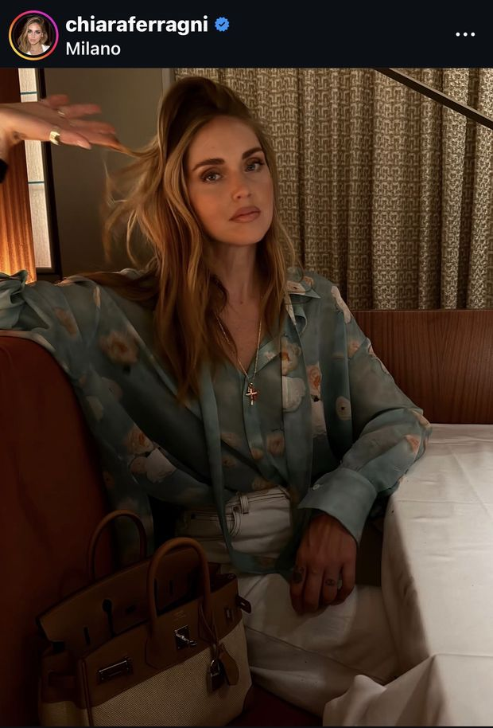
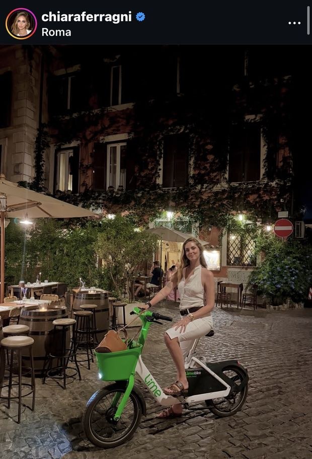

Session 23 · Marketing Fundamentals 26-27. Take a real campaign apart: which P each action belongs to, which promotion tool it is, whether the media is paid, owned, earned or shared, what it appeals to, and where it sits on the path from awareness to advocacy.
A campaign is not one thing. It is a list of actions, and each action can be placed on four scales. Most of the argument in a marketing meeting is really a disagreement about one of these four.
Not everything a brand does in a campaign is promotion. Changing the recipe is product. Removing the preservatives is product. A coupon is promotion, a permanent price cut is price, and deciding to sell only in chemists is place.
The trap: a campaign is announced through promotion, so everything inside it looks like promotion. Ask what would still be true if the advertising stopped.
Advertising - paid, non-personal, identified sponsor. Sales promotion - a short-term incentive to buy now. Public relations - building relations and getting favourable publicity. Personal selling - a person selling. Direct and digital - engaging directly with chosen people: the site, the app, the e-mail, the social account.
And one more answer that is often the right one: it is not a company action at all - it is what the audience did.
paid you bought the space. owned the channel is yours. earned somebody else published it because it was worth publishing. shared the audience passed it on.
Earned and shared cannot be bought, only provoked - which is why the brief has to give people a reason to talk.
Rational - self-interest: quality, economy, performance. Emotional - love, joy, humour, fear. Moral - what is right and proper.
And the five A's: aware → appeal → ask → act → advocate. A campaign that is all "aware" never gets anybody to act.
Three posts from the same account. The session asks one question about them: which of these is paid advertising and which is not? Look before you read the answer.
1. A post signed by the account and the brand together.

2. An evening in Milan. A bag is in the photograph.

3. A night in Rome, on a rented bike.
Not for matching the key. The key is a teaching device and it can be argued with - some actions really do sit on a border. The grade is for the argument: a classification you can defend, a sequence that makes sense, and the one thing the campaign would lose if that action were removed.